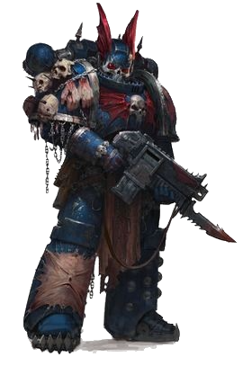
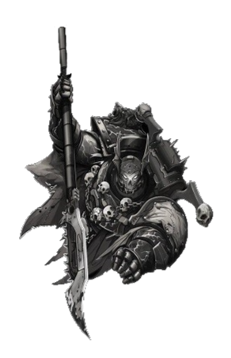

Jago Sevatarion

The First Captain of the Night Lords
"I am a son of the sunless world, and Eighth Legion to my core."
— Attributed to First Captain Sevatar
Jago Sevatarion, known also as Sevatar, "the Condemned," and the "Prince of Crows," was the First Captain of the Night Lords Legion and commander of the Atramentar, the elite Terminators of the VIIIth Legion's formidable 1st Company during the Great Crusade and the Horus Heresy eras of the late 30th and early 31st Millennia.
Containt
- Hitsory
- The Horus Heresy
- Drop Site Massacre
- Thramas Crusade
- Ultimate Fate
- The Horus Heresy
- Wargear
- Sources
History
Jago Sevatarion is said to hold the dark honour of being the first Traitor to utter the words, "Death to the false Emperor," although in truth this was but one in a long line of crimes and blasphemies committed by the First Captain of the Night Lords over many Terran years. The Night Lord known as Sevatar was born in City's Edge in Nostramo Quintus, the capital city of the sunless Hive World of Nostramo, a little more than a century before the end of the Horus Heresy.
At an early age he displayed innate psychic abilities, though he attempted to suppress them for the remainder of his life. An arrogant individual, Sevatar sometimes had great difficulty understanding the point of view of his Terran Battle-Brothers or regular humans. Part of the problem was that he was so rarely wrong. It made it hard to take other people's opinions and observations seriously. He had always been that way, even as a child. His mother had told him that he would grow out of it, that he would become better with people.
Following his induction into the VIIIth Legion, though arrogant, he proved an extremely gifted and supremely ruthless, even dishonourable, combatant. His meteoric rise through the ranks of the Night Lords soon earned him a place at his Primarch's side as his First Captain and Equerry.
This demeanour was carried through to his appearance, which was contrived to inspire fear in all who looked upon him. His midnight blue Power Armour was wreathed in flayed flesh and his helm was wrought in the form of a leering skull. Beneath that deathly visage lay not just the soul of a murderer, but one gifted with latent, if repressed psychic powers which, although unwelcome, served to increase Sevatar's already fearsome capabilities to preternatural levels.
Sevatar long repressed these abilities, which were more often in use subconsciously rather than by direct will. His powers made him different as an Astartes as well, especially in battle. He did not quite understand how it was possible, but he was able to run faster, kill quicker and tired more slowly than his enemies. He had duelled Sigismund of the Imperial Fists once -- the only warrior ever to beat him to a deadlock in over a hundred standard years of warfare.
The duel had lasted almost thirty long, long solar hours of sweat, swearing, and the crash-clash of iron against iron. Sevatar had cheated, in the end. He finished the duel, as hundreds of warriors from both Legions looked on, by headbutting the Templar and disqualifying himself. It broke the rules, as well as Sigismund's winning streak. True to his nature, Sigismund had done nothing but laugh. The proud stoicism the First Captain of the Imperial Fists was so famous for did not bleach all humanity from his humour. Sevatar had always envied him that, for he found it very difficult to laugh, to joke, to bond effortlessly with his brothers-in-arms.
The Horus Heresy
Drop Site Massacre
"Because the Wolves kill cleanly, and we do not. They also kill quickly, and we have never done that, either. They fight, they win, and they stalk back to their ships with their tails held high. If they were ever ordered to destroy another
Legion, they would do it by hurling warrior against warrior, seeking to grind their enemies down with the admirable delusions of the 'noble savage'. If we were ever ordered to assault another Legion, we would virus bomb their recruitment worlds;
slaughter their serfs and slaves; poison their gene-seed repositories and spend the next dozen decades watching them die slow, humiliating deaths. Night after night, raid after raid, we'd overwhelm stragglers from their fleets and bleach their
skulls to hang from our armour, until none remained. But that isn't the quick execution the Emperor needs, is it? The Wolves go for the throat. We go for the eyes. Then the tongue. Then the hands. Then the feet. Then we skin the crippled remains,
and offer it up as an example to any still bearing witness. The Wolves were warriors before they became soldiers. We were murderers first, last, and always!"
—Jago Sevatarion, speaking about his VIIIth Legion
Thramas Crusade
"Because we are brothers. We've seen primarchs die to blade and fire, and we've seen our actions set the galaxy aflame. We've betrayed others and been betrayed in kind. We're bleeding for an uncertain future, fighting a war for the lies our
lords tell us. What do we have left, if not blood's loyalty? I am here because you are here. Because we are brothers."
— Jago Sevatarion, "Sevatar," the Prince of Crows. As quoted in The Tenebrous Path, Chapter VI: Unity
Ultimate Fate
Some believe Sevatar met his ultimate fate at the final epic battle of the Horus Heresy during the Battle of Terra. He was eventually succeeded by Zso Sahaal, a Terran-born Night Lord. Following the death of Sevatar, the Atramentar largely dissolved, which some, like the Apothecary Talos Valcoran, believed was due to Sevatar's successor being a non-Nostraman. Though they respected Sevatar's successor, they had no affection for him. When the Atramentar disbanded after Sevatar's death, their resistance to Zso Sahaal was born from something more than simple prejudice. Some of the 1st Company were Terrans, the oldest warriors in the VIIIth Legion. There was more to it than Sahaal's birth world. Being Terran, Nostraman, or born of any other world had never mattered to most of the Night Lords. They were divided because with the Primarch gone, this was every Traitor Legion's fate over time.
Wargear
|  |  |
|
Sources
| Author | Book |
| Alan Bligh | The Horus Heresy - Book 2: Massacre pg. 245 |
| Aaron Dembski-Bowden | The First Heretic pp. 5, 363, 366, 368, 375, 404, 413 |
| Aaron Dembski-Bowden, edited by Christian Dunn | Age of Darkness pp. 321, 324, 330-331, 334, 338-340, 343-345 |
| Aaron Dembski-Bowden | Shadows of Treachery (Anthology), "Prince of Crows pp. 131, 134-147, 149-154, 165-170, 172-187 |
| Aaron Dembski-Bowden | Blood Reaver (Novel) pp. 79, 81 |
| Aaron Dembski-Bowden | Void Stalker (Novel) pp. 10, 25, 57, 77-78 |
My contanct
If you found any mistake or you want to add something please contact me